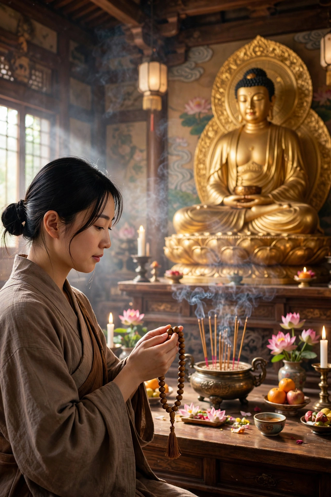

Nianfo
Nianfo (Chinese: 念佛; pinyin: niànfó) is a term commonly seen in Pure Land Buddhism, referring to the recitation of the name of Amitābha Buddha. In Japanese it is pronounced nenbutsu; in Korean, yeombul; and in Vietnamese, niệm Phật. The standard phrase recited is "Namo Amituofo" in Chinese (南無阿彌陀佛) and "Namu Amida Butsu" in Japanese, meaning "Homage to Amitābha Buddha".

Origins and meaning
The practice derives from the Sanskrit buddhānusmṛti, "recollection of the Buddha", one of the earliest forms of Buddhist meditation, and from the Pure Land sutras, in which Amitābha's Primal Vow promises rebirth in his pure land of Sukhāvatī to those who sincerely call his name, even ten times. In East Asia the practice developed into oral recitation, counted on prayer beads (mala), silent mental repetition, and various contemplative forms analysed by masters such as Zhiyi and Shandao.
In Chinese and Japanese Buddhism
In China, nianfo became the hallmark practice of the Pure Land tradition and was often combined with Chan (Zen) meditation. In Japan, Hōnen (1133–1212) made exclusive recitation of the nembutsu the sole practice of his Jōdo-shū school, and his disciple Shinran founded Jōdo Shinshū, teaching that even a single sincere recitation, arising from Amitābha's "other-power" (tariki), assures birth in the Pure Land; Shinran's followers often say the nembutsu as an expression of gratitude rather than a means to salvation.